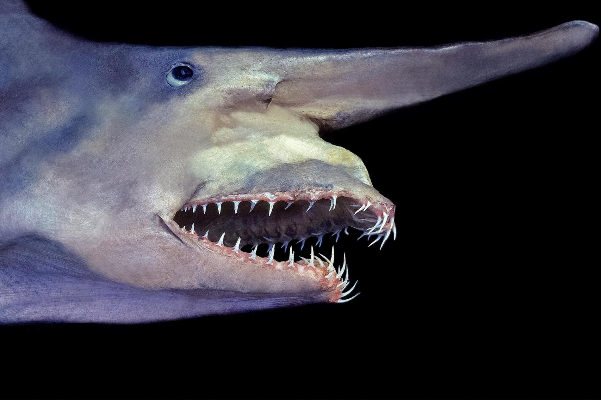
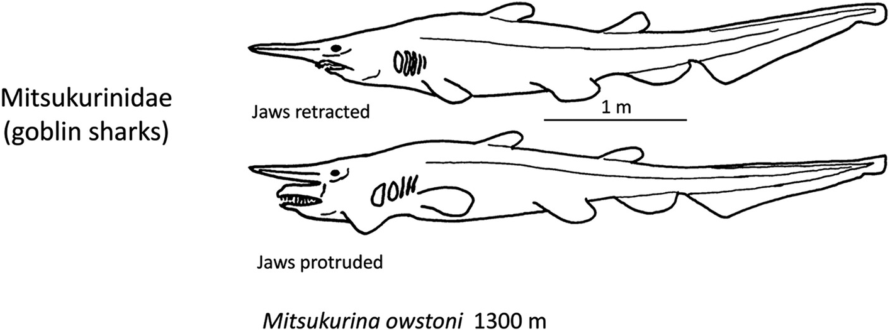
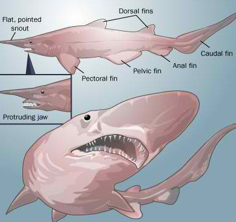
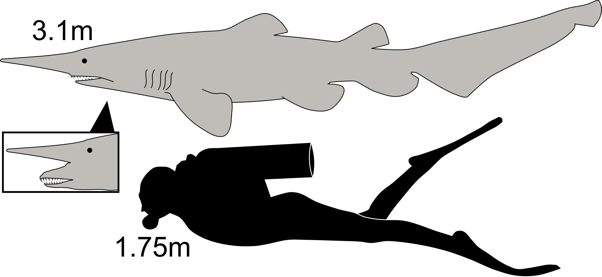
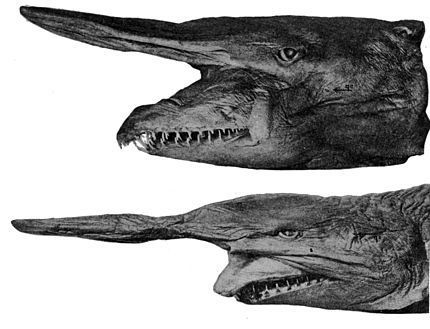

ANATOMY AND TAXONOMY
ANATOMY
The goblin shark has a distinctively long and flat snout, resembling a blade. The proportional length of the snout decreases with age. The eyes are small and lack protective nictitating membranes; behind the eyes are spiracles. The large mouth is parabolic in shape. The jaws are very protrusible and can be extended almost to the end of the snout, though normally they are held flush against the underside of the head. It has 35–53 upper and 31–62 lower tooth rows. The teeth in the main part of the jaws are long and narrow, particularly those near the symphysis (jaw midpoint), and are finely grooved lengthwise. The rear teeth near the corners of the jaw are small and have a flattened shape for crushing. Much individual variation of tooth length and width occurs, as for whether the teeth have a smaller cusplet on each side of the main cusp, and regarding the presence of toothless gaps at the symphysis or between the main and rear teeth.
The five pairs of gill slits are short, with the gill filaments inside partly exposed; the fifth pair is above the origin of the pectoral fins. The body is fairly slender and flabby. The two dorsal fins are similar in size and shape, both being small and rounded. The pectoral fins are also rather small and rounded. The pelvic and anal fins have long bases and are larger than the dorsal fins. The caudal peduncle is flattened from side-to-side and lacks keels or notches. The asymmetric caudal fin has a long upper lobe with a shallow ventral notch near the tip, and an indistinct lower lobe.
The soft, semitranslucent skin has a rough texture from a covering of dermal denticles, each shaped like a short upright spine with lengthwise ridges. Living sharks of this species are pink or tan due to visible blood vessels beneath the skin; the color deepens with age, and young sharks may be almost white. The fins' margins are translucent gray or blue, and the eyes are black with bluish streaks in the irises. After death, the coloration fades quickly to dull gray or brown.
Adult sharks usually measure between 3 and 4 m (9.8 and 13.1 ft) long. However, the capture of an enormous female estimated at 5.4–6.2 m (18–20 ft) long during 2000 showed this species can grow far larger than suspected previously. The maximum weight recorded is 210 kg (460 lb) for a shark of 3.8 m (12.5 ft) in length.
TAXONOMY
American ichthyologist David Starr Jordan described the goblin shark in an 1898 issue of Proceedings of the California Academy of Sciences, recognizing the peculiar fish not only as a new species, but also a new genus and family. He based his account on an immature male 107 cm (42 in) long caught in Sagami Bay near Yokohama, Japan. The specimen had been acquired by shipmaster and naturalist Alan Owston, who had given it to Professor Kakichi Mitsukuri at the University of Tokyo, who in turn had brought it to Jordan. Thus, Jordan named the shark Mitsukurina owstoni in honor of these two men.
The generic name honors Keigo Mitsukuri, a Japanese zoologist who studied at University College London during the 1860s. The specific name honors Alan Owston, an English collector of Asian wildlife. The common name "goblin shark" is a translation of its old Japanese name tenguzame, a tengu being a Japanese mythical creature often depicted with a long nose and red face. Another name for this species is elfin shark.
Soon after Jordan's description was published, several scientists noted the similarity between Mitsukurina and the extinct Mesozoic shark Scapanorhynchus. For a time, the prevailing opinion was to treat Mitsukurina as a junior synonym of Scapanorhynchus. Eventually, more complete fossils revealed many anatomical differences between Scapanorhynchus and Mitsukurina, causing modern authors to again regard them as distinct genera. Several goblin shark specimens were described as separate species from 1904 to 1937, none of which are now considered valid. This taxonomic confusion began because the specimens' jaws were fixed at varying degrees of protrusion during preservation, giving the appearance of proportional differences among the heads.